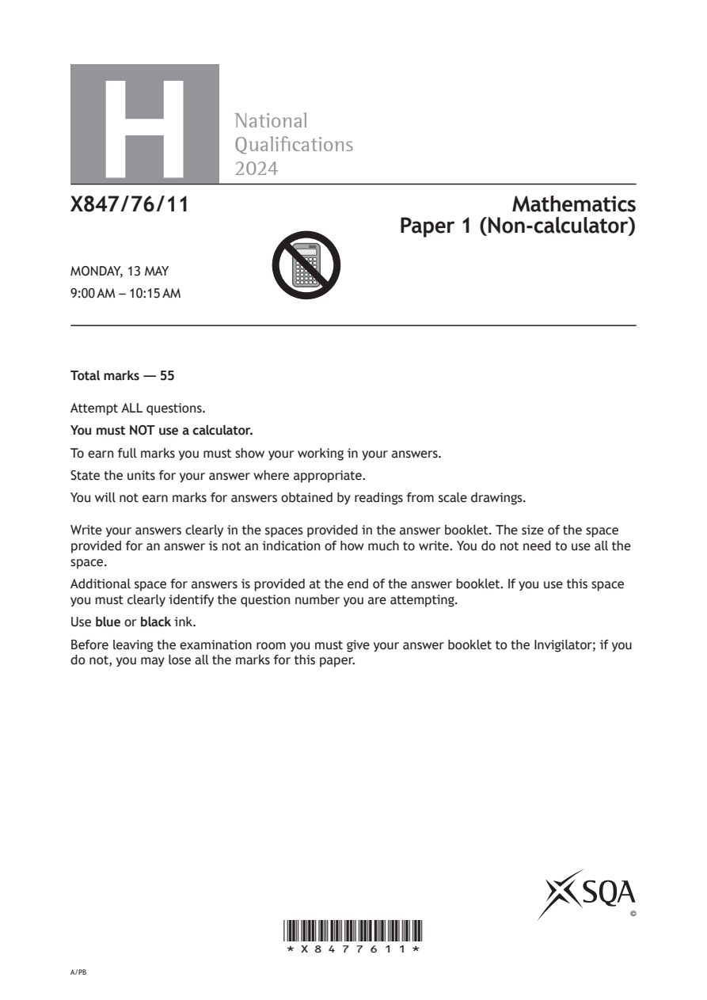
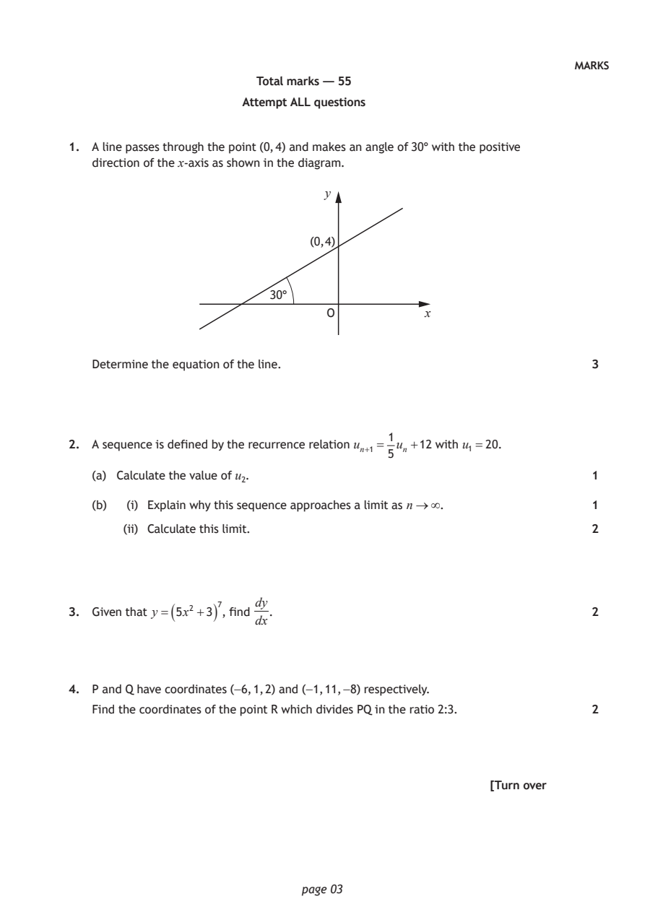
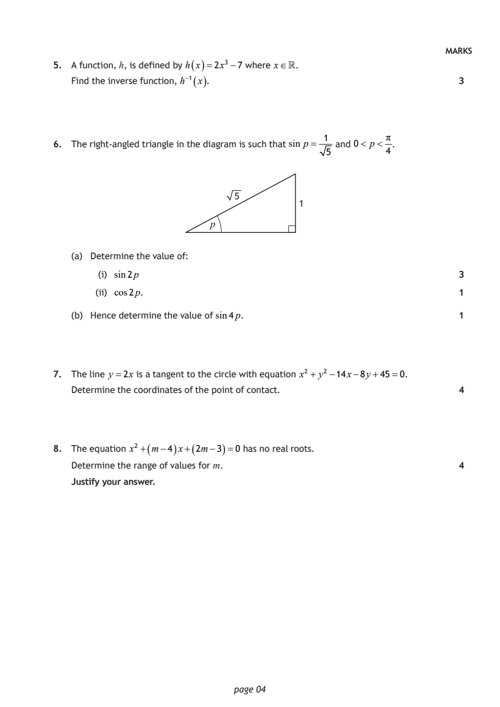
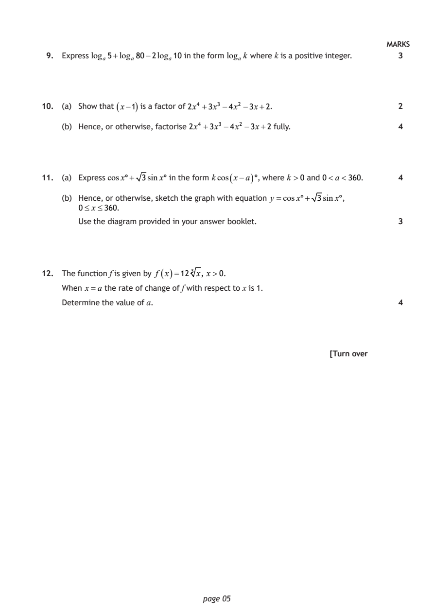
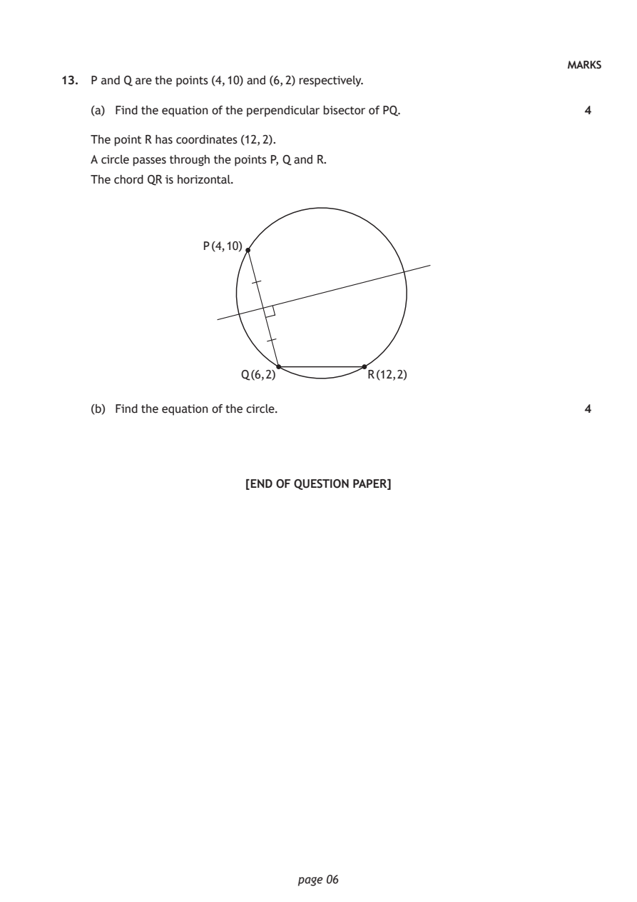

2024 Higher Mathematics - Paper 1 questions
Source: Scottish Qualifications Authority (SQA) / Qualifications Scotland. This is a StemInteract HTML companion, not an official HTML edition. Selectable text is supplied alongside original page images. Use the images or original PDF for equations, powers, fractions, vector notation, tables and diagrams; text extraction cannot fully preserve mathematical layout.
Jump to a question
PDF page 1

Selectable page text
H
National
Qualications
2024
X847/76/11 Mathematics
Paper 1 (Non-calculator)
MONDAY, 13 MAY
9:00 AM – 10:15 AM
Total marks — 55
Attempt ALL questions.
You must NOT use a calculator.
To earn full marks you must show your working in your answers.
State the units for your answer where appropriate.
You will not earn marks for answers obtained by readings from scale drawings.
Write your answers clearly in the spaces provided in the answer booklet. The size of the space
provided for an answer is not an indication of how much to write. You do not need to use all the
space.
Additional space for answers is provided at the end of the answer booklet. If you use this space
you must clearly identify the question number you are attempting.
Use blue or black ink.
Before leaving the examination room you must give your answer booklet to the Invigilator; if you
do not, you may lose all the marks for this paper.
©
*X8477611*
A/PBPDF page 2

Selectable page text
FORMULAE LIST
Circle
The equation x² + y²+ 2gx + 2fy + c=0 represents a circle centre (−g, −f ) and radius g² + f ² −c.
The equation (x−a)² + (y−b)² =r² represents a circle centre (a, b) and radius r.
Scalar product a.b= a b cos θ, where θ is the angle between a and b
a₁ b₁
or a.b=a₁b₁+a₂b₂ +a₃b₃ where a= a₂ and b= b₂ .
a₃ b₃
Trigonometric formulae sin(A±B)=sinA cosB ± cos AsinB
cos(A±B)=cosAcosB ∓ sinAsinB
sin2A =2sinAcosA
cos2A=cos²A−sin²A
=2cos²A−1
=1−2 sin²A
Table of standard derivatives
f(x) f′(x)
sinax acosax
cosax −asinax
Table of standard integrals
f(x) ∫ f(x)dx
1
sinax − cosax + c
a
1
cosax sinax + c
a
page 02PDF page 3
Paper 1, Question 1Paper 1, Question 2Paper 1, Question 3Paper 1, Question 4
Selectable page text
MARKS
Total marks — 55
Attempt ALL questions
1. A line passes through the point (0, 4) and makes an angle of 30° with the positive
direction of the x‑axis as shown in the diagram.
y
(0, 4)
30°
O x
Determine the equation of the line. 3
1
2. A sequence is defined by the recurrence relation uₙ₊₁ = uₙ +12 with u₁ =20.
5
(a) Calculate the value of u₂. 1
(b) (i) Explain why this sequence approaches a limit as n∞. 1
(ii) Calculate this limit. 2
dy
( )
3. Given that y = 5x² +3 ⁷, find . 2
dx
4. P and Q have coordinates (−6, 1, 2) and (−1, 11, −8) respectively.
Find the coordinates of the point R which divides PQ in the ratio 2:3. 2
[Turn over
page 03PDF page 4
Paper 1, Question 5Paper 1, Question 6Paper 1, Question 7Paper 1, Question 8
Selectable page text
MARKS
5. A function, h, is defined by h ( x )=2x³ −7 where x.
Find the inverse function, h⁻¹ ( x ). 3
1 π
6. The right‑angled triangle in the diagram is such that sin p = and 0< p< .
5 4
5
1
p
(a) Determine the value of:
(i) sin2p 3
(ii) cos2p. 1
(b) Hence determine the value of sin4p. 1
7. The line y =2x is a tangent to the circle with equation x² + y² −14x−8y+45=0.
Determine the coordinates of the point of contact. 4
8. The equation x² +( m−4 ) x+( 2m−3 )=0 has no real roots.
Determine the range of values for m. 4
Justify your answer.
page 04PDF page 5
Paper 1, Question 9Paper 1, Question 10Paper 1, Question 11Paper 1, Question 12
Selectable page text
MARKS
9. Express logₐ5+logₐ80−2logₐ10 in the form logₐk where k is a positive integer. 3
10. (a) Show that ( x−1 ) is a factor of 2x⁴ +3x³ −4x² −3x+2. 2
(b) Hence, or otherwise, factorise 2x⁴ +3x³ −4x² −3x+2 fully. 4
11. (a) Express cosx°+ 3sinx° in the form kcos ( x−a ) °, where k >0 and 0<a<360. 4
(b) Hence, or otherwise, sketch the graph with equation y =cosx°+ 3sinx°,
0≤ x≤360.
Use the diagram provided in your answer booklet. 3
12. The function f is given by f ( x )=12³ x, x>0.
When x=a the rate of change of f with respect to x is 1.
Determine the value of a. 4
[Turn over
page 05PDF page 6
Paper 1, Question 13
Selectable page text
MARKS
13. P and Q are the points (4, 10) and (6, 2) respectively.
(a) Find the equation of the perpendicular bisector of PQ. 4
The point R has coordinates (12, 2).
A circle passes through the points P, Q and R.
The chord QR is horizontal.
P (4, 10)
Q (6, 2) R (12, 2)
(b) Find the equation of the circle. 4
[END OF QUESTION PAPER]
page 06PDF page 7

Selectable page text
[BLANK PAGE]
DO NOT WRITE ON THIS PAGE
page 07PDF page 8

Selectable page text
[BLANK PAGE]
DO NOT WRITE ON THIS PAGE
page 08